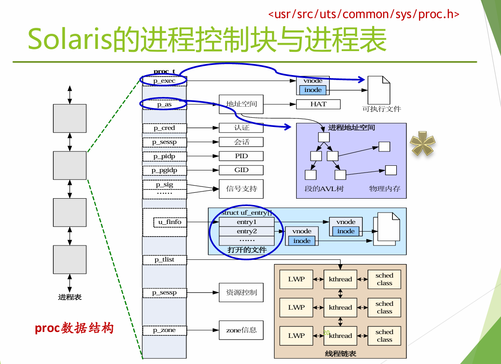

进程线程模型
进程模型
基本概念：顺序程序、多道程序与并发环境
程序是指令或语句的静态序列，用于刻画某种算法。
顺序环境中，系统同一时刻只有一个程序运行，该程序独占处理器、内存与外设等资源，其执行过程不受外界并发活动干扰，因此具有顺序性、封闭性与结果可再现性。
结果可再现性意味着，在给定输入与初始状态不变时，程序运行结果与执行速度无关。
多道程序设计允许多个程序同时进入内存并运行，其直接目标是提高系统资源利用率，尤其是提高处理器与 I/O 设备的并行重叠程度。
单处理器上的“同时”并不表示真正的硬件并行，而是指在一段时间内，多个程序都处于开始执行但尚未结束的状态，执行先后次序并不预先确定，这种现象称为并发。
并发环境中的程序具有间断性、资源共享性、相互独立性与相互制约性，程序执行结果通常不再天然可再现，程序与一次具体计算过程也不再保持一一对应关系。
进程的定义、作用与进程映像
进程是具有独立功能的程序关于某个数据集合上的一次运行活动，是系统进行资源分配和处理器调度的独立单位。
- 进程是程序的一次执行过程，是操作系统对处理器执行流的抽象。
- 操作系统通过处理器时间复用与上下文切换，在多个运行实体之间复用 CPU，使每个进程获得独占处理器的运行表象。
- 每个进程具有独立的地址空间，并以进程映像的形式存在。
- 进程映像由程序代码、数据、堆、栈以及内核中的进程控制块等成分构成，运行期间还关联页表、打开文件、信号处理状态、调度信息和其他内核对象。
- 其用户态部分主要位于内存中，在挂起或交换时可部分转移到磁盘；内核态部分则由操作系统数据结构维护。
- 程序是静态代码，进程是动态执行实体；
- 同一程序可以对应多个进程，进程具有生命周期，并可继续创建新的进程。
进程的分类
- 按功能区分为系统进程与用户进程。
- 按交互方式区分为前台进程与后台进程。
- 按资源使用特征区分为 CPU 密集型进程与 I/O 密集型进程。
- UNIX 常以进程家族树组织派生关系，
init或其后继系统进程处于根部。 - Windows 中进程关系则更趋于平等，父子关系主要服务于创建和管理，而不是唯一的组织骨架。
进程状态与状态转换
最基本的进程状态模型由运行态、就绪态和等待态构成。
- 运行态表示进程当前占有处理器并在其上执行；
- 就绪态表示进程已经具备执行条件，但因暂时没有空闲处理器而尚未运行；
- 等待态又称阻塞态，表示进程因等待某个事件发生而暂时无法运行，例如等待磁盘 I/O 完成、等待键盘输入或等待其他进程发送消息。
一个进程在任一时刻处于且仅处于一种状态。
flowchart TD New[创建] --> Ready[就绪] Ready -->|调度| Running[运行] Running -->|时间片到/被抢占| Ready Running -->|等待事件| Blocked[等待/阻塞] Blocked -->|事件发生| Ready Running -->|执行结束| Terminated[终止]
三状态模型之上，系统通常还会加入创建态、终止态与挂起态。
- 创建态表示进程所需的基本创建工作已经完成，例如分配 PID 与 PCB，但尚未被系统接纳为可执行进程（由于资源有限）；
- 终止态表示进程执行结束但仍保留部分信息以供统计、回收或父进程收尸；
- 挂起态表示进程映像被换出内存、转入磁盘，以释放内存并调节系统负载。挂起可以与就绪或阻塞结合，形成就绪挂起和阻塞挂起等更细粒度状态。
Note
Android 中与挂起态最接近的机制，是应用进入后台后的 stopped/cached/frozen 状态：系统停止其前台活动，限制或冻结其执行，尽量保留其进程与内存以支持快速恢复；在内存压力下则可能直接终止该进程，并在用户返回时依据保存状态重新创建。
iOS 中与挂起态最接近的是应用进入后台后的 suspended 状态。应用在该状态下通常仍保留在内存中，但不再执行代码；当用户重新进入应用时，系统可直接恢复其运行。若系统发生内存压力或其他后台终止条件，应用也可能在 suspended 或 background 状态下被直接终止，之后通过状态恢复机制重新创建。
状态转换并不是严格成对发生的。某个进程从运行态转为阻塞态，只说明当前进程暂时放弃处理器；是否立刻有另一个进程从就绪态转为运行态，取决于系统中是否存在其他可运行实体。反之，某个阻塞进程因事件发生而从等待态转为就绪态，也不意味着它会立即进入运行态，因为处理器可能仍被其他进程占用。这种“局部状态变化”与“全局调度决策”的分离，是进程模型的基本特征。
Linux 与 xv6 的状态表示
Linux 的进程状态并不严格对应教科书的三态或五态模型，而是围绕内核调度和睡眠机制组织。历史上常见的 TASK_RUNNING 同时覆盖“正在 CPU 上运行”和“已经准备好运行”两种情况；TASK_INTERRUPTIBLE 表示可中断睡眠，可被信号唤醒；TASK_UNINTERRUPTIBLE 表示不可中断睡眠，只能等待目标事件完成；TASK_STOPPED 表示被暂停；TASK_ZOMBIE 表示进程已经退出，但父进程尚未回收其退出信息。Linux 把“就绪”和“运行”统一归入可运行集合，这体现了实现层面对调度队列操作的优化。
stateDiagram-v2 direction TB state "TASK_RUNNING<br>（运行态 + 就绪态）" as RUNNING state "TASK_INTERRUPTIBLE<br>（可中断睡眠）" as INT_SLEEP state "TASK_UNINTERRUPTIBLE<br>（不可中断睡眠）" as UNINT_SLEEP state "TASK_STOPPED\n（暂停）" as STOPPED state "TASK_ZOMBIE\n（僵尸）" as ZOMBIE state "EXIT_DEAD\n（已回收）" as DEAD [*] --> RUNNING : fork / exec 后进入可运行队列 RUNNING --> INT_SLEEP : 等待事件<br>（可被信号打断） RUNNING --> UNINT_SLEEP : 等待关键事件<br>（不可被信号打断） RUNNING --> STOPPED : 收到 SIGSTOP / 被 ptrace 暂停 RUNNING --> ZOMBIE : exit() INT_SLEEP --> RUNNING : 事件到达 / 被信号唤醒 UNINT_SLEEP --> RUNNING : 事件完成 STOPPED --> RUNNING : SIGCONT ZOMBIE --> DEAD : 父进程 wait() / waitpid() 回收 DEAD --> [*]
xv6 的状态更为简洁：UNUSED 表示进程槽未使用，USED 表示已分配但尚未进入正常运行生命周期，SLEEPING 表示睡眠等待，RUNNABLE 表示可调度，RUNNING 表示正在执行，ZOMBIE 表示退出待回收。xv6 以极少的数据结构展示了进程状态机的核心轮廓，适合观察 allocproc、fork、sleep、wakeup、yield、exit 与 wait 之间的控制关系。
flowchart TD U[UNUSED] -->|allocproc| S1[USED] S1 -->|fork / userinit| R1[RUNNABLE] R1 -->|schedule| R2[RUNNING] R2 -->|yield| R1 R2 -->|sleep| B[SLEEPING] B -->|wakeup| R1 R2 -->|exit| Z[ZOMBIE] Z -->|freeproc| U
进程控制块与进程表
进程控制块（PCB，Process Control Block）是操作系统中描述进程的数据结构，又称进程描述符。进程与 PCB 一一对应，PCB 是操作系统感知进程存在、实施管理与完成调度的唯一内核依据。
Note
我还以为是电路板呢。
所有 PCB 的集合构成进程表。
Linux 的核心对象是 task_struct，Windows 中则对应 EPROCESS、KPROCESS、PEB 等结构。
PCB 至少需要覆盖四类信息。
- 第一类是标识与关系信息，例如 PID、进程名、用户标识、父子关系、进程组与会话关系。
- 第二类是调度与管理信息，例如当前状态、优先级、调度参数、时间统计、上下文切换计数、队列链接以及阻塞原因等。
- 第三类是资源与地址空间信息，例如虚拟内存空间描述、页表或内存映射信息、打开文件表、当前工作目录、IPC 状态以及已占有的各类资源。
- 第四类是处理器现场信息，例如通用寄存器、程序计数器、程序状态字、栈指针，以及与体系结构相关的执行上下文。
- 这些信息在发生进程或线程切换时需要被保存到 PCB 或其关联的上下文结构中。
Note
IPC 是操作系统为相互隔离的进程提供的通信与同步机制。
它的目标是支持进程之间的数据交换、事件通知和协作执行。常见 IPC 机制包括管道、命名管道、消息队列、共享内存、信号量、信号和套接字等。其中，共享内存效率最高，但必须配合同步机制使用；消息传递机制实现简单、隔离性好，但通常开销较大。
IPC 的实现与阻塞唤醒、调度、文件描述符、信号处理以及资源管理密切相关，是操作系统并发与协作机制的重要组成部分。
Solaris 的 proc_t 清楚展示了“进程是资源容器”的实现取向：它直接关联地址空间 p_as、认证信息 p_cred、会话信息、PID/PGID、信号信息、打开文件表 u_finfo、可执行文件 p_exec、线程链表 p_tlist、zone 信息与资源控制结构。

Linux 的 task_struct 则包含状态、优先级、运行队列链表、允许执行的 CPU 集合、mm_struct/active_mm、父子与线程组关系、文件系统状态、信号处理对象、定时器、上下文切换统计和体系结构相关的 thread_struct。
xv6 的 struct proc 只保留最关键的字段：锁、状态、睡眠通道、终止标志、退出码、PID、父进程、内核栈、用户地址空间大小、页表、陷入帧、上下文、打开文件数组、当前目录和进程名。真实系统显著比教学系统复杂，原因在于权限管理、信号处理、多处理器调度、命名空间、NUMA 与文件系统等机制都会向 PCB 注入额外状态。
进程地址空间：对内存的抽象
操作系统分配给进程的是虚拟地址空间，而不是一段固定的物理内存区间。虚拟地址空间的核心作用有三项：
- 为进程提供与物理布局无关的统一地址视图，使程序可以在“看似连续”的地址空间中运行；
- 提供保护与隔离，使不同进程的地址不互相冲突；
- 使共享、映射、换页和按需装入等机制成为可能。地址空间因此可以被理解为“对内存的抽象”。
两个同时运行的相同程序可以看到相同的变量地址，却拥有不同的变量值，原因在于这些地址是各自进程的虚拟地址，分别映射到不同的物理页。（老的PC可能出现）
现实系统常启用地址空间布局随机化（ASLR），使同一程序在不同次运行中也未必出现在相同的虚拟地址位置；关闭 ASLR 后，同一程序的映像布局更可能保持一致。虚拟地址的一致性与可变性因此分别服务于程序透明运行与安全防护。
flowchart LR subgraph User["用户地址空间"] Code["代码段"] Data["已初始化数据/全局区"] Heap["堆（向高地址增长）"] MMap["共享库 / 内存映射文件"] Stack["栈（向低地址增长）"] end subgraph Kernel["内核地址空间"] KText["内核代码与数据"] KObj["内核对象、页表、缓冲区"] end Code --> Data --> Heap MMap --> Stack
一个典型进程地址空间至少包含代码段、数据段、堆、栈、共享库和内存映射区域。
在 Linux 中，/proc/PID/maps 可以列出进程各段映射区域的起止地址、访问权限与后备对象，例如可执行文件映射、堆区 [heap]、栈区 [stack]、共享库映射、虚拟动态共享对象 [vdso] 以及某些平台提供的历史兼容接口区 [vsyscall]。内核中，一段连续且属性一致的虚拟地址区域通常由 vm_area_struct 描述，所有区域通过 task->mm->mmap 等结构组织起来；映射文件的区域属于有名映射，纯匿名分配的区域则属于匿名映射。
Linux 虚拟内存组织体现出“按区域管理”的思想：task_struct 指向 mm_struct，后者持有页全局目录和 vm_area_struct 链表或树；每个 vm_area_struct 描述一个区域的起止地址、访问权限和标志位，并与文件映射或匿名内存关联。这种分层使“地址空间整体属性”和“局部区域属性”可以分别管理。
flowchart LR P["进程<br/>task_struct"] M["地址空间描述符<br/>mm_struct"] P --> M M --> G["页表根<br/>pgd"] M --> O["地址空间整体信息<br/>代码段范围、数据段范围、brk 等"] M --> R["虚拟内存区域集合<br/>mmap 链表 / 树"] subgraph V["按区域管理：每个区域对应一个 vm_area_struct"] direction TB R --> V1["代码/数据段区域<br/>vm_area_struct"] R --> V2["堆区 [heap]<br/>vm_area_struct"] R --> V3["共享库区域<br/>vm_area_struct"] R --> V4["栈区 [stack]<br/>vm_area_struct"] R --> V5["特殊区域 [vdso] / [vsyscall]<br/>vm_area_struct"] A["区域共同属性<br/>起止地址、权限、标志位、偏移"] end V1 --> N1["有名映射<br/>关联可执行文件"] V3 --> N2["有名映射<br/>关联共享库文件"] V2 --> AN1["匿名映射<br/>无后备文件"] V4 --> AN2["匿名映射<br/>无后备文件"] V5 --> S["内核提供的特殊映射"]
进程队列与调度关系
进程状态在实现上通常通过队列组织。操作系统为每类状态维护一个或多个队列，队列元素是 PCB。就绪态对应就绪队列，等待态通常按等待事件划分为多个等待队列；单处理器系统中，运行态本质上只对应一个当前进程。进程状态变化时，其 PCB 会从一个队列转入另一个队列。
flowchart TD ReadyQ[就绪队列] Wait1[等待队列1] Wait2[等待队列2] CPU[处理器] CPU -->|等待事件1| Wait1 CPU -->|等待事件2| Wait2 Wait1 -->|事件1发生| ReadyQ Wait2 -->|事件2发生| ReadyQ ReadyQ -->|调度| CPU CPU -->|时间片到/抢占| ReadyQ
队列模型体现了“机制”和“策略”的分离。PCB、状态字段、上下文保存、入队出队操作、阻塞与唤醒原语属于机制，它们决定进程如何被表示与操纵；就绪队列按 FIFO、优先级或更复杂规则排序，时间片如何分配，何时抢占，属于策略。机制提供可行的控制通路，策略决定这些通路如何被使用。进程线程模型中，这种分离尤其重要，因为不同操作系统、不同应用领域，甚至同一系统中的不同线程库，都可能采用不同调度策略，但底层的状态转换与队列操作机制可以保持稳定。
进程控制原语
进程控制操作通过原语实现。
Note
原语（primitive）是不可分割、不可中断的操作序列，其执行必须保持原子性，否则就会在 PCB 修改、队列迁移或资源回收过程中产生竞态条件。(原子操作)
常见进程控制原语包括创建、撤销、阻塞、唤醒、挂起、激活（解挂）以及优先级调整。
进程创建通常完成以下工作：
- 分配唯一标识 PID 与 PCB；
- 建立地址空间；
- 初始化 PCB 各字段；
- 建立或扩展内核相关数据结构；
- 设置队列指针并把新进程插入适当队列。
进程何时创建，取决于系统场景：系统初始化、用户登录、提交程序执行、请求操作系统服务或由现有进程派生子进程时都可能创建新进程。
- 进程撤销需要结束其线程或子任务，回收其占有的资源，并删除 PCB。
- 资源回收包括关闭打开文件、断开网络连接、释放内存和解除内核对象引用。
进程终止既可能是自愿的，例如正常退出或检测到程序错误后主动结束；也可能是非自愿的，例如非法指令、越界访问、保护错误、I/O 失败、时间限制到达或被其他进程杀死。终止并不必然意味着 PCB 立即消失，许多系统都会保留“僵尸”阶段用于记录退出码和统计信息。
阻塞与唤醒是进程控制中最典型的状态切换操作。运行中的进程在等待事件时主动执行阻塞原语，把自己从运行态转为等待态；目标事件发生后，由中断处理程序或其他进程执行唤醒原语，将其移回就绪队列。阻塞是对“当前进程暂时无法推进”的确认，唤醒则是对“推进条件已经满足”的确认。二者与具体调度策略无关。
UNIX 进程 API：fork、exec、wait、exit
UNIX 进程控制的经典接口由 fork()、exec()、wait() 和 exit() 组成。
fork()通过复制当前进程创建子进程；exec()用新程序映像替换当前进程的用户地址空间；wait()允许父进程等待子进程结束，实现最基本的进程同步；exit()终止进程并向父进程留下可回收的退出信息。
Windows 则以 CreateProcess、ExitProcess、WaitForSingleObject 等接口实现对应功能。
UNIX 把“创建一个可继续执行的子进程”和“让子进程改为执行另一个程序”拆成 fork 与 exec 两步，这种设计有重要工程意义。父进程可以在 fork 之后、exec 之前对即将执行新程序的子进程进行定制，例如重定向标准输入输出、修改环境变量、建立管道、调整工作目录或设置权限属性；随后再由 exec 把子进程映像替换为目标程序。Shell 正是利用这一点完成命令解释、重定向与管道构造。wait 则把父子进程的控制关系与资源回收连接起来，避免子进程退出后长时间处于僵尸状态。
flowchart TD Shell[Shell 进程] -->|fork| Child[子进程] Child -->|继承文件描述符/工作目录/环境| Prepare[执行前定制] Prepare -->|exec| Program[目标程序映像] Program -->|exit| Zombie[退出待回收] Shell -->|wait| Reap[回收退出信息] Zombie --> Reap
fork 的实现与写时复制
传统 fork() 的语义是为子进程构造父进程地址空间的副本，并继承共享资源，例如打开文件和当前工作目录。典型实现步骤包括：为子进程分配进程描述符和唯一 PID；复制父进程地址空间；继承共享内核资源；将子进程设为就绪并插入就绪队列；对子进程返回 0，对父进程返回子进程 PID。
直接逐页复制整个地址空间代价很高，尤其在 fork() 后紧接 exec() 的常见场景下，这种复制几乎是纯浪费。
COW技术来源于存储管理模块。Linux使用该技术对
fork()进行了优化。
Linux 使用写时复制（Copy-on-Write, COW）优化 fork()：
- 首先为子进程创建新的
mm_struct、vm_area_struct与页表副本，使父子进程拥有相同的虚拟地址布局； - 然后把双方对应页面都标记为只读，并把相应区域标记为私有 COW；
- 当父进程或子进程第一次尝试写某个共享页面时，硬件因写只读页触发异常，内核再分配新物理页并复制原内容，让写入发生在私有副本上。
- 由此，只有真正被修改的页面才会发生实际复制。
flowchart TD A[fork] --> B[复制 mm_struct / VMA / 页表布局] B --> C[父子页表都改为只读] C --> D[区域标记为私有 COW] D --> E[父子继续并发执行] E -->|读页面| F[直接共享物理页] E -->|写页面| G[触发缺页/保护异常] G --> H[分配新页并复制内容] H --> I[写入私有页]
写时复制表明，进程管理与内存管理并不是彼此孤立的模块。fork() 的高效实现依赖页表权限位、异常处理路径和虚拟内存子系统协同工作。进程抽象对 CPU 的复用，地址空间抽象对内存的复用，最终在 fork() 的实现中交汇。
中断、异常、陷入与进程线程模型的关系
进程与线程的运行并不是纯粹的软件约定，其核心控制转移依赖中断、异常与陷入机制。时钟中断提供时间片边界，使系统得以抢占当前运行实体并执行调度器；设备中断在 I/O 完成时唤醒等待队列中的进程或线程；系统调用通过陷入进入内核，在用户态与内核态之间切换；页故障、保护错误、非法指令等异常则可能触发缺页处理、信号投递、阻塞恢复或进程终止。
因此，进程状态转换背后的真正驱动源可以分成三类：当前运行实体主动请求，例如系统调用与显式阻塞；外部硬件事件到达，例如时钟与设备中断；执行过程中检测到的异常事件，例如访问无效地址或写只读页。进程线程模型给出的是运行实体、地址空间和状态机抽象，中断/异常/陷入机制则提供了进入内核、修改这些抽象并返回用户态的控制通路。
进程特性与可重入程序
进程具有并发性、动态性、独立性、制约性和异步性。并发性意味着多个进程可以共同向前推进；动态性意味着进程作为程序实例会诞生、运行、阻塞、唤醒和消亡；独立性意味着每个进程拥有彼此隔离的地址空间与资源边界；制约性意味着进程会因共享资源或同步需求而相互影响；异步性意味着各进程推进速度相对独立、不可预知。
可重入程序是能够被多个进程或执行流同时调用的程序。其典型条件是：代码本身不在执行过程中修改自身状态，调用方为其提供独立数据区。可重入性强调“代码可共享、状态不共享”，与进程地址空间隔离和线程共享地址空间中的同步问题都密切相关。
线程模型
引入线程的原因
在线程出现之前，进程同时承担“资源拥有者”和“调度单位”两个角色。随着应用复杂度提升，这种绑定逐渐暴露出局限。线程的引入主要有三方面原因：
- 其一，应用需要多个执行流协同推进，例如图形编辑器或字处理软件常需同时处理用户输入、后台排版与磁盘保存，从而提高交互响应速度；
- 其二，进程创建、撤销、通信和切换开销较大，限制了细粒度并发；
- 其三，多核和多处理器体系结构要求单个地址空间内部也能并行执行多个活动。
Web 服务器是线程价值的典型例子。服务器需要接收客户端请求、检索网页、利用缓存降低磁盘访问、并把响应返回给对应连接。若完全不用线程，常见替代方法有两类：
- 一类是每次只处理一个请求的单线程顺序服务器，实现简单但吞吐量差；
- 另一类是基于非阻塞 I/O 和有限状态机的事件驱动服务器，能够并发处理多个连接，但编程模型复杂。多线程服务器通过分派线程接收连接、工作线程处理请求，在保持阻塞式编程风格的同时获得较好的并发性与响应性。
从并发服务器构造方式看，常见模型可归纳如下：
| 模型 | 并发来源 | 地址空间关系 | I/O 风格 | 主要特征 |
|---|---|---|---|---|
| 多进程 | 内核在多个进程间切换 | 各进程独立 | 可阻塞 | 隔离性强，创建与通信开销大 |
| 事件驱动/有限状态机 | 单线程手工交错多个逻辑流 | 共享同一空间 | 非阻塞 | 高效但控制流复杂 |
| 多线程 | 内核或线程库在多个线程间切换 | 共享同一进程空间 | 可阻塞或混合 | 编程自然，适合通用服务器 |
线程的基本概念与属性
线程是进程中的一个运行实体，是处理器调度的基本单位。引入线程后，进程主要作为资源拥有者存在，线程承担执行路径与调度单位角色。
线程有时也被称为轻量级进程，但其本质并不是“更小的进程”，而是把原先绑定在进程上的两个属性拆分开来：
- 地址空间、文件和 I/O 设备等资源属于进程；
- 程序计数器、寄存器状态、栈和可运行状态属于线程。
线程至少具有以下属性：
- 拥有独立的执行状态与状态转换；
- 在不运行时需要保存寄存器上下文，尤其是程序计数器、栈指针等；
- 拥有自己的栈与栈指针；
- 共享所属进程的地址空间、打开文件和其他资源；
- 能够创建和撤销其他线程。
一个程序最初通常以单线程进程方式启动，随后才在内部派生更多线程。
flowchart TB subgraph Process["进程：资源容器"] AS["共享用户地址空间"] F["共享文件/信号/资源"] subgraph T1["线程1"] U1["用户栈"] K1["内核栈"] C1["线程控制块"] end subgraph T2["线程2"] U2["用户栈"] K2["内核栈"] C2["线程控制块"] end subgraph T3["线程3"] U3["用户栈"] K3["内核栈"] C3["线程控制块"] end end
线程栈在语义上属于各自线程私有执行上下文，但在共享地址空间的多线程进程中，其他线程在获得相应地址后通常可以访问该用户栈区域。
这种“可寻址”并不意味着它应被共享使用；从程序正确性角度，线程栈仍然是线程私有状态的一部分。内核栈则由内核为每个线程维护，用户态代码不能直接访问。
用户级线程
用户级线程在用户空间实现，线程库和运行时系统负责线程创建、销毁、线程表维护与线程切换。
内核只知道进程，不知道该进程内部存在线程，因此从内核视角看，一个多线程进程仍是单一的调度对象。用户级线程切换不需要进入内核态，不涉及特权转换，因而速度快、开销小，并且可以在不支持线程的操作系统之上通过库机制实现。POSIX Pthreads 在课件中被作为典型接口示例提出。
用户级线程的优点在于：
- 线程创建和撤销代价低；线程切换快；
- 调度算法可以由应用自行控制，从而更贴近应用语义；
- 线程库可移植到多种系统。
然而其缺点同样鲜明：
- 只要某个线程发起阻塞式系统调用，内核就会阻塞整个进程，从而连带阻塞该进程内全部用户线程；
- 内核只把处理器分配给进程，因此同一进程中的多个用户级线程无法真正同时运行在多个处理器上。
flowchart LR subgraph User["用户空间"] RTS[线程运行时系统] TBL[线程表] T1[线程1] T2[线程2] end subgraph Kernel["内核空间"] PT[进程表] end RTS --> TBL Kernel --> PT
用户级线程中的“进程状态”和“线程状态”可能出现分离。
若线程 2 执行阻塞系统调用，内核看到的是整个进程 B 阻塞；当进程 B 再次被调度时，用户态线程库可能选择让线程 1 继续运行。若线程 1 只是调用用户级原语主动让出处理器，而非陷入内核，线程库可以直接在进程内部切换到线程 2，内核甚至不会察觉这一切。也正因为如此，用户级线程中的抢占式调度难以完全依赖内核完成，库实现经常需要自愿让出处理器，或者借助定时信号模拟抢占。
阻塞系统调用对用户级线程尤为不利，因此常见处理方式包括：
- 其一，用包装技术把阻塞系统调用改写为非阻塞形式；
- 其二，重写相关 I/O 库函数，使调用方在用户态采用轮询、事件通知或其他异步手段规避整进程阻塞。
这些方法本质上都在尝试缩小“内核只识别进程”这一实现前提带来的负面影响。
POSIX 线程接口
Pthreads 提供的基本接口包括：
pthread_create创建新线程pthread_exit结束当前线程pthread_join等待指定线程结束pthread_yield主动让出处理器pthread_attr_init和pthread_attr_destroy用于初始化和释放线程属性对象。
课件中特别提出“线程为什么是自愿让出 CPU”的问题，其背景正是用户级线程调度的实现约束：当内核只把整个进程视为可调度实体时，线程库只有在线程显式调用让出原语，或者借助额外机制打断当前执行时，才能在用户空间重获调度权。
核心级线程
核心级线程由内核直接管理。内核维护进程与线程两层上下文，并向应用程序提供线程 API。线程切换需要内核支持，调度器也直接以线程为基本对象进行处理，因此同一进程中的不同线程可以在多个处理器上并行执行；若某个线程阻塞，通常只会阻塞该线程而不是整个进程。Windows 是典型的核心级线程系统。
核心级线程的主要代价在于：
- 线程创建、销毁与切换都需要进入内核，系统调用频繁时开销高于纯用户级线程；
- 内核必须维护更多线程级状态，调度器与同步机制实现也更复杂。
核心级线程换来的是更强的多处理器并行能力、更自然的阻塞语义和更完整的内核可见性。
混合模型
混合模型试图结合用户级线程和核心级线程的优点。其典型结构是：
- 线程创建在用户空间完成，由用户级运行时维护大量用户线程；
- 真正与处理器绑定的是较少数量的核心级线程，用户线程再被多路复用到这些内核线程之上。
Solaris 曾采用这类思路。混合模型的目标是同时获得低开销线程管理和多处理器并行能力，但它也带来了映射关系维护、阻塞传播与调度协同的复杂度。
flowchart LR subgraph User["用户空间"] U1[用户线程1] U2[用户线程2] U3[用户线程3] U4[用户线程4] end subgraph Kernel["内核空间"] K1[内核线程1] K2[内核线程2] end U1 --> K1 U2 --> K1 U3 --> K2 U4 --> K2
线程实现方式的边界
线程实现方式的选择体现了操作系统设计中的边界权衡。
- 用户级线程把灵活性和低开销放在首位，但它依赖应用或运行时避免阻塞式内核接口
- 核心级线程把通用性和并行性放在首位，但增加了系统态切换与内核维护负担
- 混合模型则把复杂性转移到运行时和内核之间的协作层
没有任何一种模型能在所有维度上同时最优。
协程
协程的引入动机
协程的引入主要针对高并发和异步任务处理场景，尤其适用于大量连接、I/O 密集型服务与细粒度异步流程。线程虽然比进程轻量，但当线程数量进一步膨胀时，栈空间占用、切换开销、调度开销和同步复杂度都会迅速上升。“线程越多越好”并不成立。
面向 C10K （一台服务器如何同时处理10,000并发连接）一类高并发问题，系统往往需要把线程池、非阻塞 I/O、I/O 多路复用和更轻量的执行流组织方式结合起来。
协程的概念与边界
协程是在一个线程或进程内部实现多个执行流，并让这些执行流通过显式挂起与恢复进行协作的一种机制。
协程不是内核调度实体，通常运行在用户态，更接近语言或运行时提供的控制流抽象。它强调“协作式切换”，即执行流在合适的时机主动让出控制权，而不是依赖内核随时抢占。
协程与线程的边界在于：
- 线程通常是操作系统可见的调度单位，具备内核可识别的上下文和阻塞语义；
- 协程通常只由语言运行时管理，本身不能直接在多个处理器上并行，除非底层仍然建立在多个线程之上。
- 协程与用户级线程相似，都属于用户态执行流组织机制，但协程更强调异步编程模型中的挂起点、恢复点与状态机转化。
协程的使用与实现
协程通常依赖编程语言或库支持，例如 Python asyncio、Rust async_std、C++20 coroutine，以及课件中提及的 Go 的 goroutine/coroutine 风格支持。
它们常与事件循环、异步 I/O 或运行时调度器配合，把原本需要大量线程维护的等待状态压缩成可恢复的轻量任务对象。其典型收益在于：减少线程数量与切换代价，使等待 I/O 的大量任务能够以极低成本挂起与恢复。
Windows 中的 fiber（纤程）可以视为与协程相近的用户态执行流机制：一个线程内部可以包含多个纤程，由用户态显式切换。纤程进一步说明，执行流组织并不必然等同于内核线程，语言、库和运行时可以在同一线程之上构造更轻量的并发抽象。
进程、线程与协程的层次关系
三者可以概括为如下层次：
- 进程解决“资源隔离与地址空间边界”问题，是资源分配单位。
- 线程解决“同一资源容器内部的并发执行与调度”问题，是经典的 CPU 调度单位。
- 协程解决“单线程内部大量异步任务的低成本组织”问题，是语言或运行时层面的协作执行流。
flowchart TD P[进程<br/>资源边界 / 地址空间 / 文件] T[线程<br/>调度单位 / 执行上下文 / 栈] C[协程<br/>用户态任务 / 挂起恢复 / 低切换开销] P --> T T --> C
这三类抽象并不是相互替代关系，而是分布在不同层次上。一个服务器可以由多个进程组成，每个进程拥有多个线程，每个线程内部再运行大量协程。真正的工程设计关注点不在于“哪一种抽象更高级”，而在于隔离性、并行性、编程复杂度、阻塞语义与切换成本之间的平衡。
总结
进程通过把处理器时间复用与资源边界组织起来，形成了操作系统中最基础的运行抽象；PCB、进程状态机、地址空间和进程控制原语构成了这一抽象的实现骨架。线程把“资源拥有者”和“执行路径”分离，使同一地址空间内的多个执行流成为可能；不同线程实现方式则分别对应不同的内核可见性、阻塞语义和并行能力。协程进一步把并发组织推进到语言与运行时层，使大量异步任务能够以更低成本运行。整个模型从底层控制机制到上层编程抽象逐层展开，构成了现代操作系统和并发软件系统的基本结构。